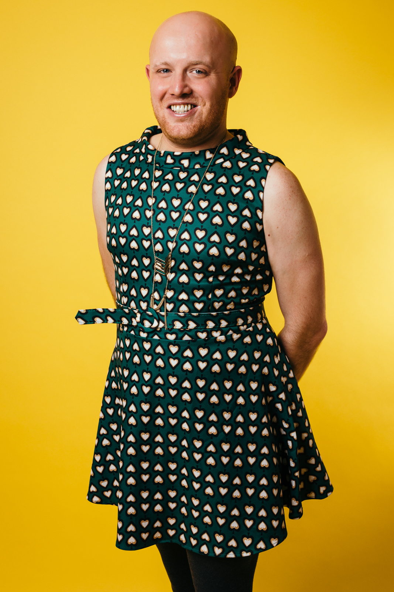
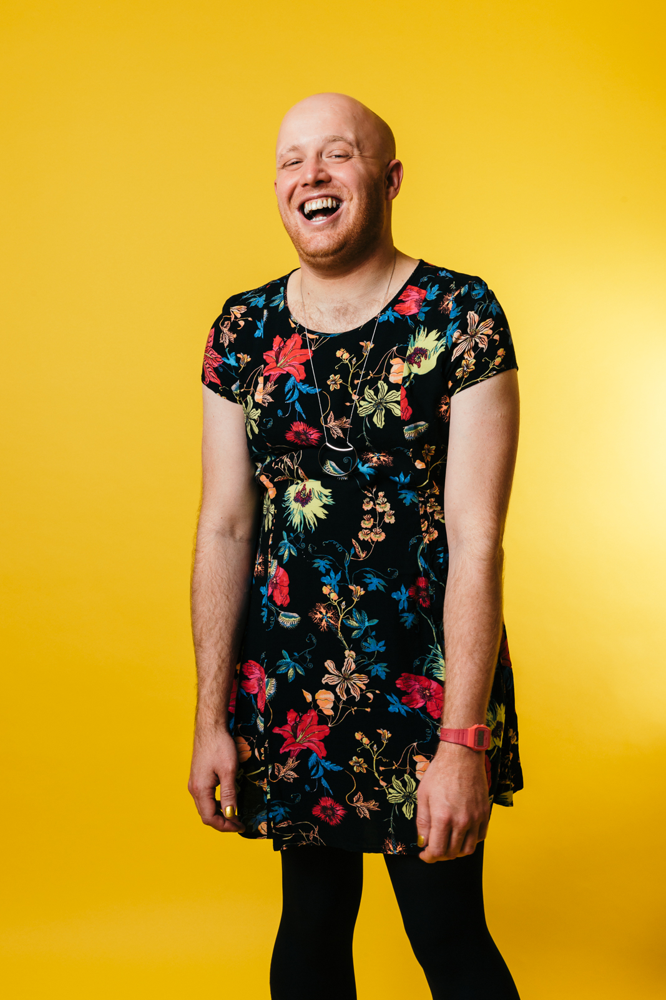

Neil McDonald MBE LGBT Consultancy
Speeches – Training – Consultancy
For regular updates follow Neil on twitter @neilLGBT
 - Has extensive experience within the public sector and has helped a central government department of state to be the first (and so far only) department recognised as a Star Performer by leading LGBT (lesbian, gay, bisexual and trans) charity Stonewall.
- Helped the department to be rated as the top Civil Service department in supporting trans staff by trans support network a:gender.
- Worked as a diversity adviser within the department, specialising in sexual orientation and gender identity issues.
- Spent three years as deputy chair of their LGBT network, overseeing re-writes of gender identity policies to be inclusive of non-binary people and the introduction of gender-neutral toilet facilities.
- Led the implementation of recommendations from reports by various groups including HM Inspectorate of Constabulary (HMIC), Stonewall and the UK Lesbian and Gay Immigration Group (UKLGIG).
- Assisted with Civil Service-wide gender identity policy introduction and training HR professionals.